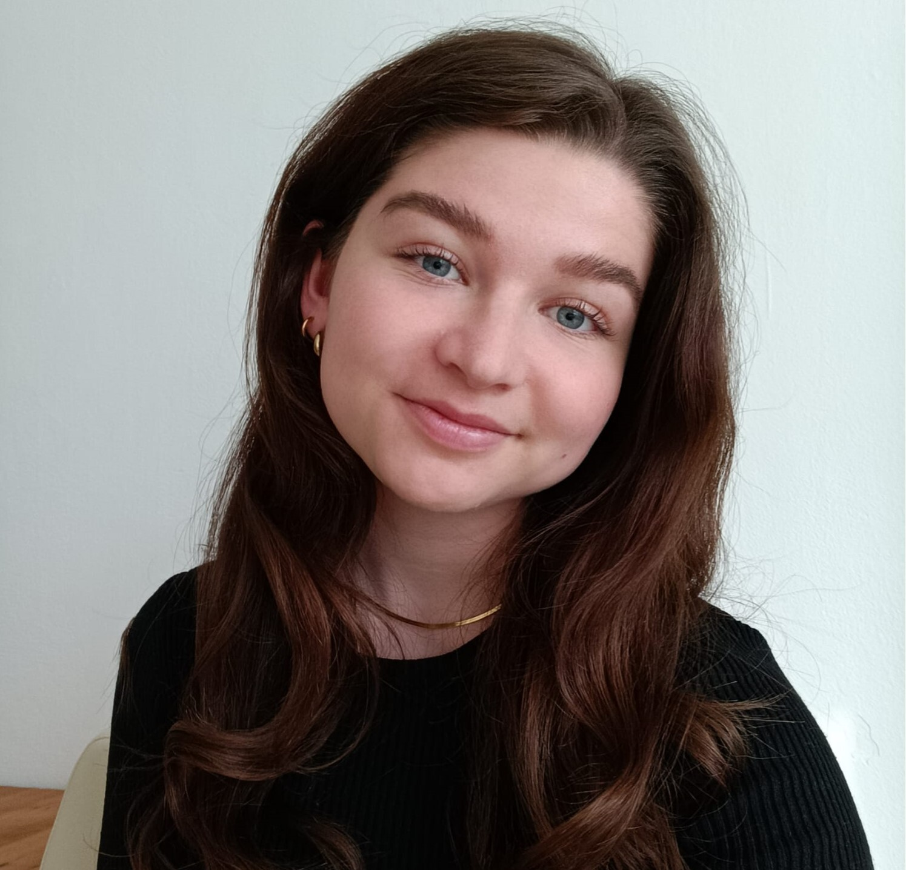

Britt Besch
Incoming Research Resident @ UK AI Security Institute, Science of Evals.
I am interested in AI Safety, in particular AI alignment, scheming and societal impacts.
I am currently an MPhil in Machine Learning and Machine Intelligence @ University of Cambridge, UK. Before that, I have completed a B.Sc. in Psychology at LMU Munich.
I enjoy research. I currently work on character training of LLMs with Prof. Robert Mullins @ Cambridge. Before, I have been a Visiting Researcher @ Stanford, working with Prof. Tobias Gerstenberg and a Student Researcher @ German Aerospace Center (DLR) at their Institute for Robotics and Mechatronics.
I enjoy running, hiking, singing, cafés, (chocolate) cake and good conversations.